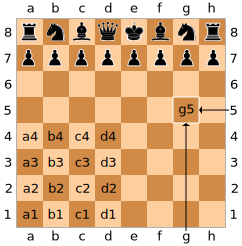

To help chess players to flawlessly document their games,
you can develop a regular expression.
The chess notation
is derived from the numbering of the chass board.

Write a regular expression, for valid locations.
a1
b3
c8
C8
a0
f7
x
i1
a9
h6
Here, you can add chess fields to test your regular expression: